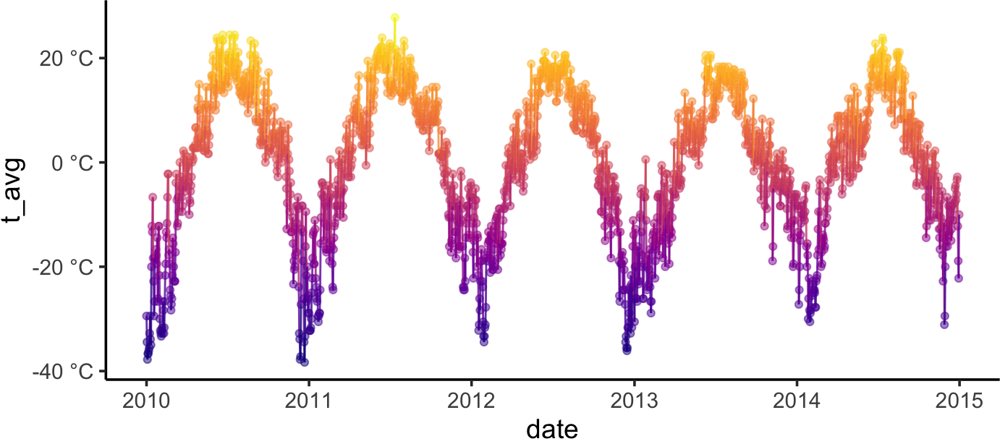
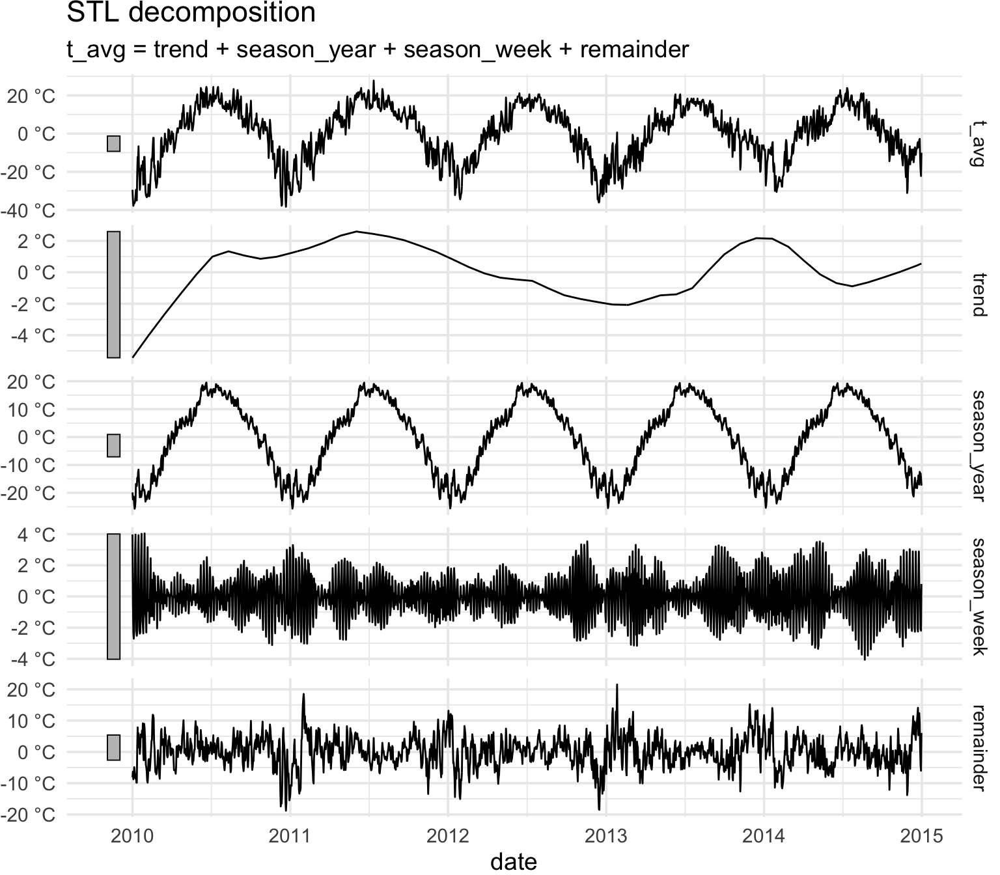
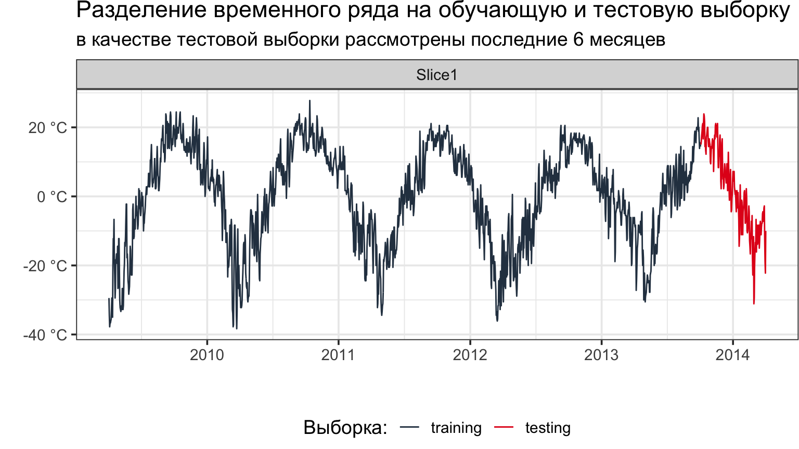
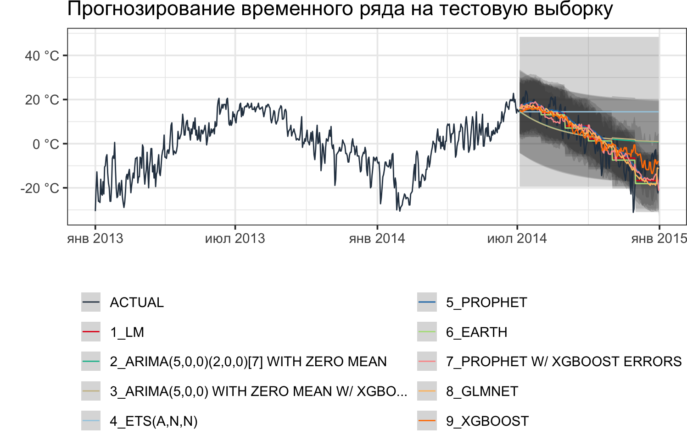
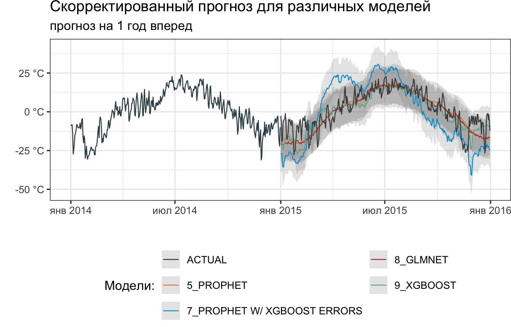
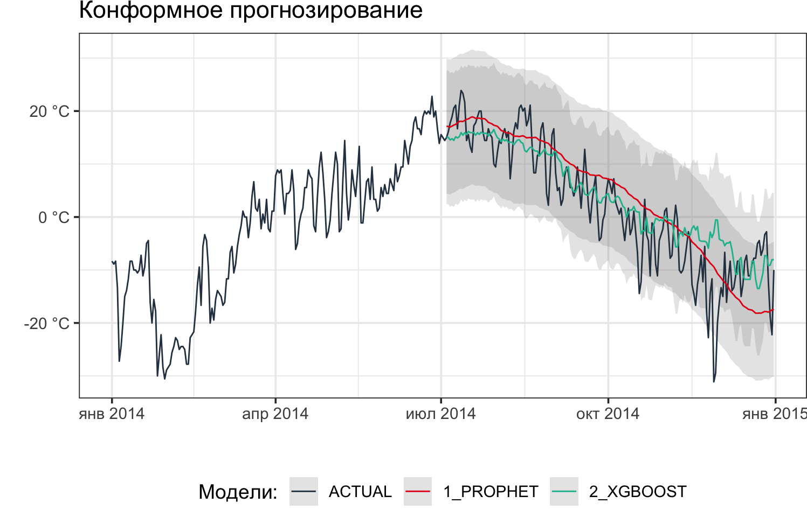
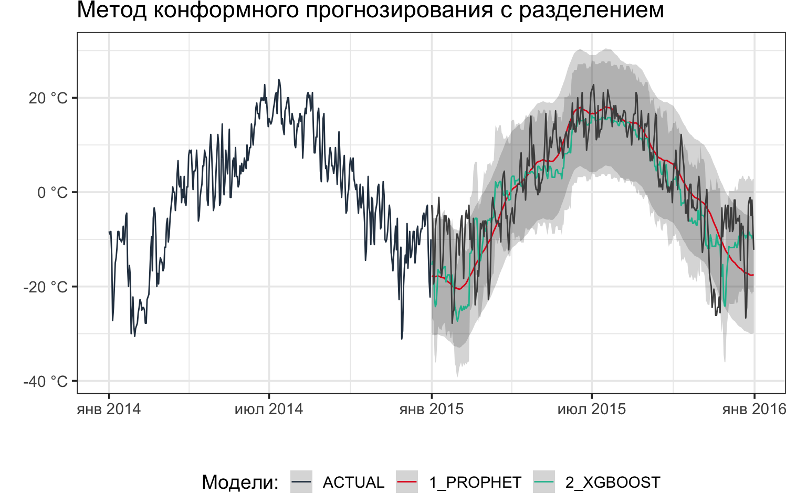

# общие библиотеки
library(magrittr)
library(tidyverse)
library(lubridate)
# моделирование
library(tidymodels)
library(modeltime)
library(timetk)
# future! 🚀
library(future)
plan(sequential)Под временным рядом (динамическим рядом) обычно понимается последовательность наблюдений {\(y_t\)}, элементы которой принимают случайные значения через определенные (обычно регулярные) значения времени \(t\). Область применения временных рядов очень обширна, временные ряды используются в сейсмологии, метеорологии, экономике, при регистрации значений любых датчиков. Временным рядам посвящено большое количество литературы, в частности, работа с временными рядами в среде R описана в монографиях [R.H. Shumway & D.S. Stoffer], [R. Hyndman and G. Athanasopoulos] и [С.Э. Мастицкий].
В нашем случае в качестве временных рядов рассматривается, например, количество пожаров, регистрируемых в сутки/неделю/месяц, уровень воды в водоемах, дневная температура воздуха, и т.д. Мы покажем применение библиотеки modeltime для моделирования временных рядов с помощью методов машинного обучения. Основные преимущества данной библиотеки:
- использование современных алгоритмов машинного обучения;
- комбинирование нескольких алгоритмов для улучшения результата;
- работа с несколькими моделями одновременно;
- настройка гиперпараметров моделей.
Библиотека modeltime (см. сайт библиотеки и вводное видео) интегрирована с библиотекой tidymodels, что позволяет рассматривать ее в рамках единой экосистемы алгоритмов машинного обучения, основанной на принципах tidy data (см. [H. Wickham]). Узнать больше о библиотеке tidymodels можно на сайте библиотеки и из книги [M. Kuhn and J. Silge].
Работа с библиотекой modeltime
Установка библиотеки
Стабильную версию библиотеки можно установить из репозитория CRAN соответствующей командой:
install.packages("modeltime")Девелоперская версия доступна на GitHub:
remotes::install_github("business-science/modeltime")Исходные данные
Подключим небходимые библиотеки.
Рассмотрим фондовые данные, представляющие собой среднюю суточную температуру воздуха в г. Красноярске . Исходные данные содержат 1 826 записей и имеют две переменных: date и t_avg, которые отвечают за дату наблюдения и среднюю температуру воздуха.
temp_KRSK# A tibble: 1,826 × 2
date t_avg
<date> <dbl>
1 2012-02-29 -20.6
2 2012-03-01 -18.3
3 2012-03-02 -15
4 2012-03-03 -8.89
5 2012-03-04 -8.89
6 2012-03-05 -15.6
7 2012-03-06 -17.8
8 2012-03-07 -15.6
9 2012-03-08 -16.7
10 2012-03-09 -15.6
# ℹ 1,816 more rowsВизуализируем данные по температурам воздуха.
Код
temp_KRSK |>
mutate(year = lubridate::year(date)) |>
dplyr::filter(year <= 2014) |>
ggplot(aes(x = date, y = t_avg, color = t_avg)) +
geom_point(alpha = 0.5) +
geom_line(alpha = 0.8) +
scale_x_date(date_breaks = "1 year",
date_labels = "%Y") +
scale_y_continuous(labels = function(x) str_c(x, " °C")) +
viridis::scale_color_viridis(option = "plasma") +
theme_classic(base_size = 14) +
theme(legend.position = "none") +
theme(plot.margin = ggplot2::margin(0.01, 0.01, 0.01, 0.01, "cm"))

Из графика видно, что данные имеют периодический характер. Составим временной ряд и исследуем его некоторые характеристики.
Код
library(feasts)
library(tsibble)
(temp_ts <- as_tsibble(temp_KRSK, index = date))# A tsibble: 1,826 x 2 [1D]
date t_avg
<date> <dbl>
1 2010-01-01 -29.4
2 2010-01-02 -34.4
3 2010-01-03 -37.8
4 2010-01-04 -36.7
5 2010-01-05 -36.7
6 2010-01-06 -36.1
7 2010-01-07 -35.6
8 2010-01-08 -32.8
9 2010-01-09 -29.4
10 2010-01-10 -33.9
# ℹ 1,816 more rowsПостроим разложение временного ряда на несколько более простых компонентов, используя аддитивную модель, как STL-разложение для одногодичного окна.
dcmp <- temp_ts |>
model(STL(t_avg ~ trend(window = 365)))components(dcmp)# A dable: 1,826 x 8 [1D]
# Key: .model [1]
# : t_avg = trend + season_year + season_week + remainder
.model date t_avg trend season_week season_year remainder season_adjust
<chr> <date> <dbl> <dbl> <dbl> <dbl> <dbl> <dbl>
1 STL(t… 2010-01-01 -29.4 -5.44 3.98 -19.9 -8.12 -13.6
2 STL(t… 2010-01-02 -34.4 -5.40 -0.344 -22.4 -6.32 -11.7
3 STL(t… 2010-01-03 -37.8 -5.36 -2.35 -21.3 -8.76 -14.1
4 STL(t… 2010-01-04 -36.7 -5.32 -2.70 -21.4 -7.27 -12.6
5 STL(t… 2010-01-05 -36.7 -5.29 -2.27 -24.2 -4.88 -10.2
6 STL(t… 2010-01-06 -36.1 -5.25 0.707 -25.7 -5.85 -11.1
7 STL(t… 2010-01-07 -35.6 -5.21 2.86 -25.1 -8.13 -13.3
8 STL(t… 2010-01-08 -32.8 -5.17 3.96 -23.0 -8.56 -13.7
9 STL(t… 2010-01-09 -29.4 -5.13 -0.376 -16.8 -7.13 -12.3
10 STL(t… 2010-01-10 -33.9 -5.10 -2.19 -16.8 -9.78 -14.9
# ℹ 1,816 more rowsИзобразим графически разложение временного ряда на отдельные компоненты.
components(dcmp) |>
autoplot() +
scale_x_date(date_breaks = "1 year",
date_labels = "%Y") +
scale_y_continuous(labels = function(x) str_c(x, " °C")) +
theme_minimal()

Моделирование временных рядов
Весь поток операций в modeltime можно разбить на следующие шаги, позволяющие выполнить:
- Сбор данных и разделение их на обучающую и тестовую выборки.
- Создание и подгонку нескольких моделей одновременно.
- Добавление подогнанных моделей в таблицу моделей.
- Калибровку моделей на тестовое множество.
- Выполнение прогноза для тестового множества и оценку точности.
- Корректировку моделей на полный набор данных и прогнозирование на будущие значения.
Кратко покажем реализацию этих шагов. Ниже показана иллюстрация оптимизированного рабочего процесса, рассмотренная на сайте библиотеки.

Шаг 1
Разбиение на обучающую и тестовую выборку можно делать либо указав временной параметр, либо процентные соотношения.
# Разделение выборки на обучающую и тестовую
set.seed(2024)
splits <- temp_KRSK |>
arrange(date) |>
time_series_split(assess = "6 months",
cumulative = TRUE)
# альтернативный вариант
# в соотношении 90% / 10%
# splits <- temp_KRSK |>
# arrange(date) |>
# rsample::initial_time_split(prop = 0.9)
splits<Analysis/Assess/Total>
<1645/181/1826>Код
splits |>
tk_time_series_cv_plan() |>
plot_time_series_cv_plan(date, t_avg,
.interactive = FALSE) +
scale_x_date(date_breaks = "12 months",
date_labels = "%Y") +
scale_y_continuous(labels = function(x) str_c(x, " °C")) +
labs(title = "Разделение временного ряда на обучающую и тестовую выборку",
subtitle = "в качестве тестовой выборки рассмотрены последние 6 месяцев",
color = "Выборка:") +
theme_bw(base_size = 14) +
theme(plot.margin = ggplot2::margin(0.01, 0.01, 0.01, 0.01, "cm"),
legend.position = "bottom")

Шаг 2
Следующим этапом является создание и подгонка моделей. Ключевая особенность modeltime заключается в возможности работы с несколькими моделями одновременно. Это позволяет сравнивать модели, выбирая наилучшие результаты, включая как классические модели
- Linear Regression
- ARIMA
- Exponential Smoothing
- MARS (Multivariate Adaptive Regression Splines)
так и модели машинного обучения. Модели машинного обучения более сложны, чем автоматизированные модели, эта сложность обычно требует рабочего процесса – workflows (иногда называемого конвейером). Полный список моделей, который постоянно дополняется, можно получить на сайте Modeltime Ecosystem Roadmap: New Algorithms & Models. Отметим, что modeltime позволяет комбинировать алгоритмы, улучшая их, например, получая Boosted Models на основе CatBoost или LightGBM.
Общий процесс протекает следующим образом:
- Создание типа модели, так называемого рецепта (recipe) предварительной обработки используя
tidymodels. - Создание спецификаций модели.
- Использование рабочего процесса для объединения спецификаций модели, предобработки и подходящей модели.
Построим несколько моделей для данного временного ряда.
1. Линейная регрессия
# Модель 1: lm
# Линейная регрессия
model_fit_lm <- linear_reg() |>
set_engine("lm") |>
fit(t_avg ~ as.numeric(date) + factor(month(date), ordered = FALSE),
data = training(splits))model_fit_lmparsnip model object
Call:
stats::lm(formula = t_avg ~ as.numeric(date) + factor(month(date),
ordered = FALSE), data = data)
Coefficients:
(Intercept) as.numeric(date)
-1.701e+01 -1.782e-04
factor(month(date), ordered = FALSE)2 factor(month(date), ordered = FALSE)3
2.198e+00 1.333e+01
factor(month(date), ordered = FALSE)4 factor(month(date), ordered = FALSE)5
2.280e+01 2.711e+01
factor(month(date), ordered = FALSE)6 factor(month(date), ordered = FALSE)7
3.588e+01 3.673e+01
factor(month(date), ordered = FALSE)8 factor(month(date), ordered = FALSE)9
3.395e+01 2.794e+01
factor(month(date), ordered = FALSE)10 factor(month(date), ordered = FALSE)11
2.211e+01 1.342e+01
factor(month(date), ordered = FALSE)12
3.245e+00 2. Классическая модель ARIMA с автоопределением параметров
# Модель 2: auto_arima
# ARIMA
model_fit_arima <- arima_reg() |>
set_engine(engine = "auto_arima") |>
fit(t_avg ~ date, data = training(splits))frequency = 7 observations per 1 weekmodel_fit_arimaparsnip model object
Series: outcome
ARIMA(5,0,0)(2,0,0)[7] with zero mean
Coefficients:
ar1 ar2 ar3 ar4 ar5 sar1 sar2
1.0313 -0.2946 0.132 -0.0170 0.1248 -0.0358 0.0081
s.e. 0.0245 0.0354 0.036 0.0354 0.0253 0.0262 0.0252
sigma^2 = 14.71: log likelihood = -4543.63
AIC=9103.25 AICc=9103.34 BIC=9146.53. Модель ARIMA Boost
# Модель 3: arima_boost
# ARIMA с бустингом (уменьшение ошибок с помощью XGBoost)
model_fit_arima_boosted <- arima_boost(
min_n = 2,
learn_rate = 0.015) |>
set_engine(engine = "auto_arima_xgboost") |>
fit(t_avg ~ date + as.numeric(date) +
factor(month(date), ordered = F),
data = training(splits))frequency = 7 observations per 1 week4. Модель ETS
# Модель 4: ets
# экспоненциальное сглаживание
# ETS(A,N,N)
model_fit_ets <- exp_smoothing() |>
set_engine(engine = "ets") |>
fit(t_avg ~ date, data = training(splits))frequency = 7 observations per 1 weekmodel_fit_etsparsnip model object
ETS(A,N,N)
Call:
forecast::ets(y = outcome, model = model_ets, damped = damping_ets,
Call:
alpha = alpha, beta = beta, gamma = gamma)
Smoothing parameters:
alpha = 0.9999
Initial states:
l = -29.4188
sigma: 4.0323
AIC AICc BIC
16773.45 16773.46 16789.66 5. Модель Prophet
# Модель 5: prophet
# Prophet by Facebook
model_fit_prophet <- prophet_reg() |>
set_engine("prophet") |>
fit(t_avg ~ date, training(splits))model_fit_prophetparsnip model object
PROPHET Model
- growth: 'linear'
- n.changepoints: 25
- changepoint.range: 0.8
- yearly.seasonality: 'auto'
- weekly.seasonality: 'auto'
- daily.seasonality: 'auto'
- seasonality.mode: 'additive'
- changepoint.prior.scale: 0.05
- seasonality.prior.scale: 10
- holidays.prior.scale: 10
- logistic_cap: NULL
- logistic_floor: NULL
- extra_regressors: 06. Модель MARS
# Модель 6: MARS
# Пример "рецепта" предобработки
recipe_spec <- recipe(t_avg ~ date, data = training(splits)) |>
step_date(date, features = "month", ordinal = FALSE) |>
step_mutate(date_num = as.numeric(date)) |>
step_normalize(date_num) |>
step_rm(date)# вид "рецепта"
recipe_spec |> prep() |> juice()# A tibble: 1,645 × 3
t_avg date_month date_num
<dbl> <fct> <dbl>
1 -29.4 Jan -1.73
2 -34.4 Jan -1.73
3 -37.8 Jan -1.73
4 -36.7 Jan -1.72
5 -36.7 Jan -1.72
6 -36.1 Jan -1.72
7 -35.6 Jan -1.72
8 -32.8 Jan -1.72
9 -29.4 Jan -1.71
10 -33.9 Jan -1.71
# ℹ 1,635 more rows# спецификации модели MARS (Computational engine: earth)
model_spec_mars <- mars(mode = "regression") |>
set_engine("earth")# собираем модель MARS
workflow_fit_mars <- workflow() |>
add_recipe(recipe_spec) |>
add_model(model_spec_mars) |>
fit(training(splits))workflow_fit_mars══ Workflow [trained] ══════════════════════════════════════════════════════════
Preprocessor: Recipe
Model: mars()
── Preprocessor ────────────────────────────────────────────────────────────────
4 Recipe Steps
• step_date()
• step_mutate()
• step_normalize()
• step_rm()
── Model ───────────────────────────────────────────────────────────────────────
Selected 12 of 14 terms, and 10 of 12 predictors
Termination condition: Reached nk 25
Importance: date_monthJun, date_monthJul, date_monthAug, date_monthMay, ...
Number of terms at each degree of interaction: 1 11 (additive model)
GCV 40.70011 RSS 65092.56 GRSq 0.8009174 RSq 0.806217. Модель Prophet Boost
# Модель 7: Prophet Boost
# рецепт
recipe_spec <- recipe(t_avg ~ date, training(splits)) |>
step_timeseries_signature(date) |>
step_rm(contains("am.pm"), contains("hour"), contains("minute"),
contains("second"), contains("xts")) |>
step_fourier(date, period = 365, K = 5) |>
step_dummy(all_nominal())# спецификации
model_spec_prophet_boost <- prophet_boost() |>
set_engine("prophet_xgboost",
yearly.seasonality = TRUE)# сборка модели
workflow_fit_prophet_boost <- workflow() |>
add_model(model_spec_prophet_boost) |>
add_recipe(recipe_spec) |>
fit(training(splits))8. Модель glmnet
# Модель 8: glmnet
# recipe
recipe_spec <- recipe(t_avg ~ date, training(splits)) |>
step_timeseries_signature(date) |>
step_rm(contains("am.pm"), contains("hour"), contains("minute"),
contains("second"), contains("xts")) |>
step_fourier(date, period = 365, K = 5) |>
step_dummy(all_nominal())# просмотр "рецепта"
recipe_spec |> prep() |> juice()# A tibble: 1,645 × 47
date t_avg date_index.num date_year date_year.iso date_half
<date> <dbl> <dbl> <int> <int> <int>
1 2010-01-01 -29.4 1262304000 2010 2009 1
2 2010-01-02 -34.4 1262390400 2010 2009 1
3 2010-01-03 -37.8 1262476800 2010 2009 1
4 2010-01-04 -36.7 1262563200 2010 2010 1
5 2010-01-05 -36.7 1262649600 2010 2010 1
6 2010-01-06 -36.1 1262736000 2010 2010 1
7 2010-01-07 -35.6 1262822400 2010 2010 1
8 2010-01-08 -32.8 1262908800 2010 2010 1
9 2010-01-09 -29.4 1262995200 2010 2010 1
10 2010-01-10 -33.9 1263081600 2010 2010 1
# ℹ 1,635 more rows
# ℹ 41 more variables: date_quarter <int>, date_month <int>, date_day <int>,
# date_wday <int>, date_mday <int>, date_qday <int>, date_yday <int>,
# date_mweek <int>, date_week <int>, date_week.iso <int>, date_week2 <int>,
# date_week3 <int>, date_week4 <int>, date_mday7 <int>, date_sin365_K1 <dbl>,
# date_cos365_K1 <dbl>, date_sin365_K2 <dbl>, date_cos365_K2 <dbl>,
# date_sin365_K3 <dbl>, date_cos365_K3 <dbl>, date_sin365_K4 <dbl>, …# спецификация модели
model_spec_glmnet <- linear_reg(penalty = 0.01, mixture = 0.5) |>
set_engine("glmnet")# сборка модели glmnet
workflow_fit_glmnet <- workflow() |>
add_model(model_spec_glmnet) |>
add_recipe(recipe_spec %>% step_rm(date)) |>
fit(training(splits))9. Модель XGBoost
recipe_ml_xb <- recipe(t_avg ~ date, training(splits)) |>
step_timeseries_signature(date) |>
step_rm(date) |>
step_dummy(all_nominal_predictors(), one_hot = TRUE)model_xgb <- boost_tree("regression") |>
set_engine("xgboost")# сборка модели XGBoost
workflow_fit_xgb <- workflow() |>
add_model(model_xgb) |>
add_recipe(recipe_ml_xb) |>
fit(training(splits))Шаг 3
Модели прописываются и добавляются в единую таблицу моделей, в которой до включения можно настраивать параметры, а затем проходит их подгонка/масштабирование, проверка на соответствие и калибровка по отношению к тестовой выборке. Далее происходит оценка качества моделей на тестовой выборке используя различные показатели точности:
- MAE – средняя абсолютная ошибка;
- MAPE – средняя абсолютная процентная ошибка;
- MASE – средняя абсолютная нормированная ошибка;
- SMAPE – симметричная средняя абсолютная процентная ошибка;
- RMSE – среднеквадратическая ошибка;
- RSQ – показатель \(R^2\).
# добавление подогнанных моделей в таблицы моделей
models_tbl <- modeltime_table(
model_fit_lm,
model_fit_arima,
model_fit_arima_boosted,
model_fit_ets,
model_fit_prophet,
# модели машинного обучения
workflow_fit_mars,
workflow_fit_prophet_boost,
workflow_fit_glmnet,
workflow_fit_xgb
)# просмотр таблицы моделей
models_tbl# Modeltime Table
# A tibble: 9 × 3
.model_id .model .model_desc
<int> <list> <chr>
1 1 <fit[+]> LM
2 2 <fit[+]> ARIMA(5,0,0)(2,0,0)[7] WITH ZERO MEAN
3 3 <fit[+]> ARIMA(5,0,0) WITH ZERO MEAN W/ XGBOOST ERRORS
4 4 <fit[+]> ETS(A,N,N)
5 5 <fit[+]> PROPHET
6 6 <workflow> EARTH
7 7 <workflow> PROPHET W/ XGBOOST ERRORS
8 8 <workflow> GLMNET
9 9 <workflow> XGBOOST Шаг 4
Калибровка, по сути, – это способ определения доверительных интервалов и метрик точности, при этом калибровочные данные – это спрогнозированные значения и невязки, которые вычисляются на основе данных вне выборки.
# калибровка
calibration_tbl <- models_tbl |>
modeltime_calibrate(new_data = testing(splits))# таблица калиброванных моделей
# добавились переменные .type и .calibration_data
calibration_tbl# Modeltime Table
# A tibble: 9 × 5
.model_id .model .model_desc .type .calibration_data
<int> <list> <chr> <chr> <list>
1 1 <fit[+]> LM Test <tibble>
2 2 <fit[+]> ARIMA(5,0,0)(2,0,0)[7] WITH ZERO… Test <tibble>
3 3 <fit[+]> ARIMA(5,0,0) WITH ZERO MEAN W/ X… Test <tibble>
4 4 <fit[+]> ETS(A,N,N) Test <tibble>
5 5 <fit[+]> PROPHET Test <tibble>
6 6 <workflow> EARTH Test <tibble>
7 7 <workflow> PROPHET W/ XGBOOST ERRORS Test <tibble>
8 8 <workflow> GLMNET Test <tibble>
9 9 <workflow> XGBOOST Test <tibble> Шаг 5
Сформированные модели проверяются на тестовых данных и визуализируются.
Код
# пример прогнозирования временного ряда на тестовую выборку
calibration_tbl |>
modeltime_forecast(new_data = testing(splits),
actual_data = temp_KRSK) |>
dplyr::filter(.index >= "2013-01-01") |>
plot_modeltime_forecast(.interactive = F) +
labs(color = "",
title = "Прогнозирование временного ряда на тестовую выборку") +
scale_x_date(date_labels = "%b %Y") +
scale_y_continuous(labels = function(x) str_c(x, " °C")) +
guides(color = guide_legend(ncol = 2)) +
theme_bw(base_size = 14) +
theme(plot.margin = ggplot2::margin(0.01, 0.01, 0.01, 0.01, "cm"),
legend.position = "bottom")

Также составляется таблица ошибок, использующая рассмотренные выше показатели точности, пример такого рода таблицы показан ниже.
# таблица ошибок
calibration_tbl |>
modeltime_accuracy() |>
table_modeltime_accuracy(.interactive = F) | Accuracy Table | ||||||||
|---|---|---|---|---|---|---|---|---|
| .model_id | .model_desc | .type | mae | mape | mase | smape | rmse | rsq |
| 1 | LM | Test | 5.04 | 112.76 | 1.49 | 68.86 | 6.52 | 0.72 |
| 2 | ARIMA(5,0,0)(2,0,0)[7] WITH ZERO MEAN | Test | 7.54 | 98.19 | 2.23 | 119.21 | 9.46 | 0.73 |
| 3 | ARIMA(5,0,0) WITH ZERO MEAN W/ XGBOOST ERRORS | Test | 7.68 | 100.83 | 2.27 | 119.60 | 9.64 | 0.70 |
| 4 | ETS(A,N,N) | Test | 14.00 | 309.22 | 4.13 | 122.56 | 17.30 | NA |
| 5 | PROPHET | Test | 5.14 | 112.79 | 1.52 | 71.69 | 6.49 | 0.75 |
| 6 | EARTH | Test | 5.11 | 108.29 | 1.51 | 69.94 | 6.58 | 0.72 |
| 7 | PROPHET W/ XGBOOST ERRORS | Test | 4.75 | 99.21 | 1.40 | 62.31 | 5.93 | 0.76 |
| 8 | GLMNET | Test | 4.65 | 94.70 | 1.37 | 63.48 | 5.98 | 0.77 |
| 9 | XGBOOST | Test | 4.67 | 78.11 | 1.38 | 70.05 | 6.43 | 0.76 |
Шаг 6
Заключительный этап состоит в том, чтобы скорректировать модели, распространить их на полный набор данных и спрогнозировать будущие значения.
Как видно из предыдущего шага, не все модели в нашем случае имеют относительно хорошие показатели ошибок (в частности, коэффициент детерминации должен быть близок к единице, остальные показатели должны быть чем меньше, тем лучше), модели с 1 по 4 и 6 можно удалить из-за низкой точности.
'%not_in%' <- function(x,y)!('%in%'(x,y))
refit_tbl <- calibration_tbl |>
filter(.model_id %not_in% c(1:4, 6)) |>
modeltime_refit(data = temp_KRSK)Визуализируем прогноз на 1 год вперед, изобразив при этом и истинные значения.
# истинные данные с 1 января по 31 декабря 2015 года
temp_2015 <- temp_raw |>
dplyr::filter(between(date, as.Date("2015-01-01"),
as.Date("2015-12-31"))) |>
rename(.index = date)temp_2015# A tibble: 365 × 2
.index t_avg
<date> <dbl>
1 2015-01-01 -2.78
2 2015-01-02 -6.67
3 2015-01-03 -19.4
4 2015-01-04 -18.3
5 2015-01-05 -7.78
6 2015-01-06 -5.56
7 2015-01-07 -5
8 2015-01-08 -4.44
9 2015-01-09 -1.11
10 2015-01-10 -6.11
# ℹ 355 more rowsКод
refit_tbl |>
modeltime_forecast(h = "1 year",
actual_data = temp_KRSK) |>
dplyr::filter(.index >= "2014-01-01") |>
plot_modeltime_forecast(.interactive = FALSE,
.conf_interval_fill = "grey50") +
geom_line(data = temp_2015, aes(x = .index, y = t_avg),
color = "grey30", linewidth = 0.5) +
labs(title = "Скорректированный прогноз для различных моделей",
subtitle = "прогноз на 1 год вперед",
color = "Модели:") +
scale_x_date(#date_breaks = "1 year",
date_labels = "%b %Y") +
scale_y_continuous(labels = function(x) str_c(x, " °C")) +
ggsci::scale_color_jama() +
theme_bw(base_size = 14) +
guides(color = guide_legend(ncol = 2,
override.aes = list(size = 7))) +
theme(plot.margin = ggplot2::margin(0.01, 0.01, 0.01, 0.01, "cm"),
legend.position = "bottom")

Мы видим, что модели PROPHET и GLMNET дают близкий результат, основываясь на тренде, а PROPHET W/ XGBOOST ERRORS и XGBOOST пытаются повторить аномалии, причем PROPHET W/ XGBOOST ERRORS имеет высокий разброс значений. У нас имеются истинные значения температур за прогнозируемый 2015 год, какая же из моделей оказалась наиболее близкой по значениям? Составим аналог дисперсии для сравнения моделей.
# какая модель ближе всего к истинным значениям?
# значение меньше -- лучше
refit_tbl |>
modeltime_forecast(h = "1 year",
actual_data = temp_KRSK) |>
dplyr::filter(.index >= "2015-01-01",
.index <= "2015-12-31",
.key == "prediction") %>%
left_join(., temp_2015) |>
group_by(.model_desc) |>
summarise(model_variance = sum(.value - t_avg)^2 / 10000)# A tibble: 4 × 2
.model_desc model_variance
<chr> <dbl>
1 GLMNET 37.5
2 PROPHET 12.4
3 PROPHET W/ XGBOOST ERRORS 43.0
4 XGBOOST 51.2Можно сделать вывод, что PROPHET оказалась ближе всего к реальным температурам.
Конформное прогнозирование
Конформное прогнозирование (предсказание) служит для количественной оценки неопределенности и входит в различные области, связанные с наукой о данных и машинным обучением. История и введение в метод хорошо изложены в статье [A. N. Angelopoulos and S. Bates, 2021], а непосредственно суть и алгоритмические вопросы в монографии [V. Vovk, A. Gammerman, and G. Shafer]. Также, можно обратиться к странице Awesome Conformal Prediction, которую ведет Владимир Манохин. Мы применяем метод конформного прогнозирования для оценки оптимальных порогов вероятности (см. статью на сайте библиотеки modeltime).
Начальные шаги для построения модели такие же, как и выше, поэтому мы выберем две модели PROPHET и XGBOOST для иллюстрации и составим таблицу моделей.
models_tbl_conf <- modeltime_table(
model_fit_prophet,
workflow_fit_xgb
)Сделаем калибровку моделей на тестовое множество.
calibration_tbl_conf <- models_tbl_conf |>
modeltime_calibrate(
new_data = testing(splits)
)Теперь мы теперь можем реализовать интервал конформного прогнозирования, используя базовый метод, который использует функцию qnorm() для получения 95% доверительного интервала по умолчанию (это значит, что 95% тестовых данных будут находиться в пределах границ). Метод оценивает нормальное (гауссово распределение) на основе ошибок вне выборки (остатков). Доверительный интервал корректируется по среднему значению, т.е., если среднее значение остатков не равно нулю, доверительный интервал корректируется таким образом, чтобы расширить интервал для учета разницы в средних значениях.
forecast_tbl_conf <- calibration_tbl_conf |>
modeltime_forecast(
new_data = testing(splits),
actual_data = temp_KRSK,
conf_interval = 0.95,
conf_method = "conformal_default",
conf_by_id = FALSE,
keep_data = TRUE
)forecast_tbl_conf |> tail()# A tibble: 6 × 9
.model_id .model_desc .key .index .value .conf_lo .conf_hi date
<int> <chr> <fct> <date> <dbl> <dbl> <dbl> <date>
1 2 XGBOOST predicti… 2014-12-26 -7.26 -19.9 5.37 2014-12-26
2 2 XGBOOST predicti… 2014-12-27 -7.36 -20.0 5.27 2014-12-27
3 2 XGBOOST predicti… 2014-12-28 -9.18 -21.8 3.45 2014-12-28
4 2 XGBOOST predicti… 2014-12-29 -9.07 -21.7 3.56 2014-12-29
5 2 XGBOOST predicti… 2014-12-30 -8.05 -20.7 4.58 2014-12-30
6 2 XGBOOST predicti… 2014-12-31 -8.05 -20.7 4.58 2014-12-31
# ℹ 1 more variable: t_avg <dbl>Визуализируем вероятностные интервалы для конформного прогнозирования для обоих моделей.
Код
forecast_tbl_conf |>
dplyr::filter(.index >= "2014-01-01") |>
plot_modeltime_forecast(
.interactive = FALSE,
.conf_interval_fill = "grey50",
.title = "Конформное прогнозирование"
) +
scale_y_continuous(labels = function(x) str_c(x, " °C")) +
theme_bw(base_size = 14) +
labs(color = "Модели:") +
guides(color = guide_legend(override.aes = list(size = 7))) +
theme(plot.margin = ggplot2::margin(0.01, 0.01, 0.01, 0.01, "cm"),
legend.position = "bottom")

Можно быстро изменить модель и составить прогноз на будущее для данных, которые еще не произошли, применив конформные вероятности к оценкам будущего прогноза. Отметим, что здесь значение conf_method = "conformal_split", т.к. этот метод использует метод конформного прогнозирования с разделением (split conformal prediction) или сплит-конформное прогнозирование, описанный в [J. Lei, M. G’Sell, A. Rinaldo, R. J. Tibshirani, L. Wasserman, 2016], что также реализовано в функции int_conformal_split() библиотеки R probably. Дело в том, что при достаточно небольших предположениях наборы конформных предсказаний обеспечивают точное покрытие. Эти привлекательные теоретические свойства контрастируют с очень высокими вычислительными затратами, что затрудняет их практическое применение. Чтобы решить эту проблему, было предложено индуктивное или разделенное конформное прогнозирование, которое успешно решает проблему эффективности вычислений, но за счет введения дополнительной случайности из-за однократного случайного разделения данных.
refit_tbl <- calibration_tbl_conf |>
modeltime_refit(temp_KRSK)
new_data_tbl <- temp_KRSK |>
future_frame(.length_out = "1 year")
forecast_future_tbl <- refit_tbl |>
modeltime_forecast(
new_data = new_data_tbl,
actual_data = temp_KRSK,
conf_interval = 0.95,
conf_method = "conformal_split",
conf_by_id = FALSE,
keep_data = TRUE
)С помощью прогноза на будущее мы можем визуализировать как точечные оценки, так и 95%-область конформной вероятности. Как видно, истинные значения входят в 95%-прогноз.
Код
forecast_future_tbl |>
dplyr::filter(.index >= "2014-01-01") |>
plot_modeltime_forecast(
.interactive = FALSE,
.title = "Метод конформного прогнозирования с разделением"
) +
geom_line(data = temp_2015, aes(x = .index, y = t_avg),
color = "grey30", linewidth = 0.5) +
scale_x_date(date_labels = "%b %Y") +
scale_y_continuous(labels = function(x) str_c(x, " °C")) +
labs(color = "Модели:") +
theme_bw(base_size = 14) +
theme(plot.margin = ggplot2::margin(0.01, 0.01, 0.01, 0.01, "cm"),
legend.position = "bottom")

Заключение
Мы рассмотрели методы прогнозирования временных рядов на основе современных алгоритмов машинного обучения для составления прогноза температуры воздуха, что является само по себе интересной задачей и служит хорошей иллюстрацей метода. Используя возможности языка программирования R, можно не только разрабатывать модели прогнозирования, но и в последующем делать на их основе актуальные аналитические веб-сервисы на основе R Markdown и Shiny для практического применения прогнозов, что представляется перспективным направлением.
Преимущество подхода библиотеки modeltime заключается в возможности одновременного анализа нескольких моделей с помощью создания таблицы (Accuracy Table), содержащей метрики, что может быть использовано для дальнейшей автоматизации. Также, интересна реализация в modeltime метода конформного прогнозирования. За пределами рассмотренной статьи остаются библиотеки дополняющие modeltime: sknifedatar, которая позволяет работать с наборами временных рядов, modeltime.h2o как backend для экосистемы modeltime на основе H2O AutoML и modeltime.gluonts для реализации алгоритмов Deep Learning.
Session Info
─ Session info ───────────────────────────────────────────────────────────────
setting value
version R version 4.3.2 (2023-10-31)
os macOS Monterey 12.1
system aarch64, darwin20
ui X11
language (EN)
collate ru_RU.UTF-8
ctype ru_RU.UTF-8
tz Asia/Krasnoyarsk
date 2024-03-01
pandoc 2.18 @ /Users/materov/opt/miniconda3/envs/ox/bin/ (via rmarkdown)
quarto 1.4.550
─ Packages ───────────────────────────────────────────────────────────────────
package * version date (UTC) lib source
broom * 1.0.5 2023-06-09 [1] CRAN (R 4.3.0)
dials * 1.2.1 2024-02-22 [1] CRAN (R 4.3.1)
dplyr * 1.1.4 2023-11-17 [1] CRAN (R 4.3.1)
earth * 5.3.3 2024-02-26 [1] CRAN (R 4.3.1)
fabletools * 0.4.0 2024-02-09 [1] CRAN (R 4.3.1)
feasts * 0.3.1 2023-03-22 [1] CRAN (R 4.3.0)
forcats * 1.0.0 2023-01-29 [1] CRAN (R 4.3.0)
Formula * 1.2-5 2023-02-24 [1] CRAN (R 4.3.0)
future * 1.33.1 2023-12-22 [1] CRAN (R 4.3.1)
ggplot2 * 3.5.0 2024-02-23 [1] CRAN (R 4.3.1)
infer * 1.0.6 2024-01-31 [1] CRAN (R 4.3.1)
lubridate * 1.9.3 2023-09-27 [1] CRAN (R 4.3.1)
magrittr * 2.0.3 2022-03-30 [1] CRAN (R 4.3.0)
modeldata * 1.3.0 2024-01-21 [1] CRAN (R 4.3.1)
modeltime * 1.2.8 2023-09-02 [1] CRAN (R 4.3.0)
parsnip * 1.2.0 2024-02-16 [1] CRAN (R 4.3.1)
plotmo * 3.6.3 2024-02-26 [1] CRAN (R 4.3.1)
plotrix * 3.8-4 2023-11-10 [1] CRAN (R 4.3.1)
purrr * 1.0.2 2023-08-10 [1] CRAN (R 4.3.0)
readr * 2.1.5 2024-01-10 [1] CRAN (R 4.3.1)
recipes * 1.0.10 2024-02-18 [1] CRAN (R 4.3.1)
rsample * 1.2.0 2023-08-23 [1] CRAN (R 4.3.0)
scales * 1.3.0 2023-11-28 [1] CRAN (R 4.3.1)
sessioninfo * 1.2.2 2021-12-06 [1] CRAN (R 4.3.0)
stringr * 1.5.1 2023-11-14 [1] CRAN (R 4.3.1)
tibble * 3.2.1 2023-03-20 [1] CRAN (R 4.3.0)
tidymodels * 1.1.1 2023-08-24 [1] CRAN (R 4.3.0)
tidyr * 1.3.1 2024-01-24 [1] CRAN (R 4.3.1)
tidyverse * 2.0.0 2023-02-22 [1] CRAN (R 4.3.0)
timetk * 2.9.0 2023-10-31 [1] CRAN (R 4.3.1)
tsibble * 1.1.4 2024-01-29 [1] CRAN (R 4.3.1)
tune * 1.1.2 2023-08-23 [1] CRAN (R 4.3.0)
workflows * 1.1.4 2024-02-19 [1] CRAN (R 4.3.1)
workflowsets * 1.0.1 2023-04-06 [1] CRAN (R 4.3.0)
yardstick * 1.3.0 2024-01-19 [1] CRAN (R 4.3.1)
[1] /Library/Frameworks/R.framework/Versions/4.3-arm64/Resources/library
──────────────────────────────────────────────────────────────────────────────Ссылка для цитирования
BibTeX
@online{матеров2021,
author = {Матеров, Е.Н.},
title = {Использование машинного обучения для анализа временных рядов},
date = {2021-01-09},
url = {https://www.naukaidannye.netlify.app/blog/posts/2021-01-09-modeltime},
langid = {ru}
}
На публикацию можно сослаться как
Матеров Е.Н. Использование машинного обучения
для анализа временных рядов [Electronic resource]. 2021. URL: https://www.naukaidannye.netlify.app/blog/posts/2021-01-09-modeltime.